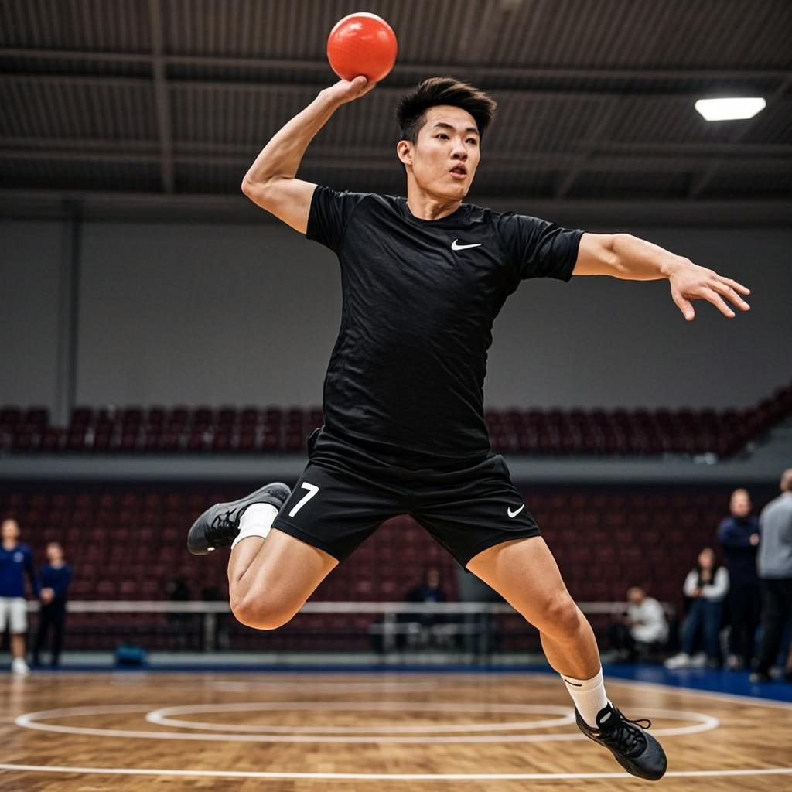

Timeline des Sacres
Revivez chaque titre, chaque trophée soulevé, chaque moment historique de notre club
🏆 Double Championnat-Coupe
Une saison historique avec le sacre en championnat national et la victoire en coupe du Sénégal. L'équipe dirigée par Ibrahim Touré a réalisé un parcours parfait, ne concédant que 2 défaites sur l'ensemble de la saison. La finale de coupe s'est terminée sur le score de 34-28 face à l'AS Dakar.

🏆 Supercoupe Nationale
Après un championnat maîtrisé, l'équipe remporte la Supercoupe face au tenant du titre. Un match intensif avec une victoire 31-29 dans les dernières secondes, marqué par un but spectaculaire de Moussa Sow à la sirène finale.
🏆 Championnat National
Malgré une saison perturbée, l'équipe a montré une résilience exceptionnelle pour décrocher le titre de champion. Karim Benzema, alors tout jeune joueur, s'est illustré comme le meilleur passeur du championnat avec 234 passes décisives.

🏆 Triplé Historique
La saison la plus glorieuse de l'histoire du club avec trois trophées remportés : Championnat, Coupe et Supercoupe. Une génération dorée menée par Mamadou Diallo et Omar Benali qui ont brillé de mille feux avant de prendre leur retraite sportive.
🏆 Coupe du Sénégal
Victoire en finale de coupe après une remontée historique. Menés de 6 buts à la mi-temps, les joueurs ont réalisé un second temps mémorable pour s'imposer 32-30. Jean-Pierre Mbappé a annoncé sa retraite juste après ce match légendaire.

🏆 Premier Tour International
L'équipe participe pour la première fois à un tournoi international et revient avec la médaille d'or. Une victoire 35-30 en finale contre une équipe de Côte d'Ivoire. Ce tournoi a marqué le début de la reconnaissance du club sur la scène africaine.

🏆 Championnat National (2e titre)
Deuxième titre de championnat confirmant la montée en puissance du club. Avec une défense de fer dirigée par Omar Benali et une attaque explosive menée par Seydou Konaté, l'équipe a dominé le championnat de bout en bout.

🏆 Premier Championnat National
Le premier trophée majeur du club ! Après des années de travail acharné et de construction, l'équipe remporte enfin le championnat national. Ce sacre fondateur a posé les bases d'une dynastie qui perdure jusqu'à aujourd'hui. Les festivités ont duré une semaine entière à Dakar.